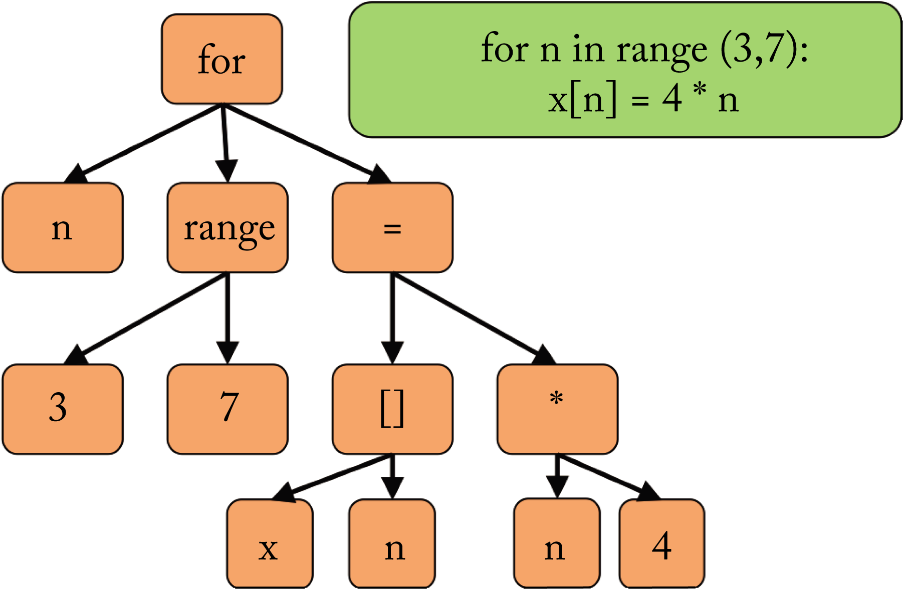
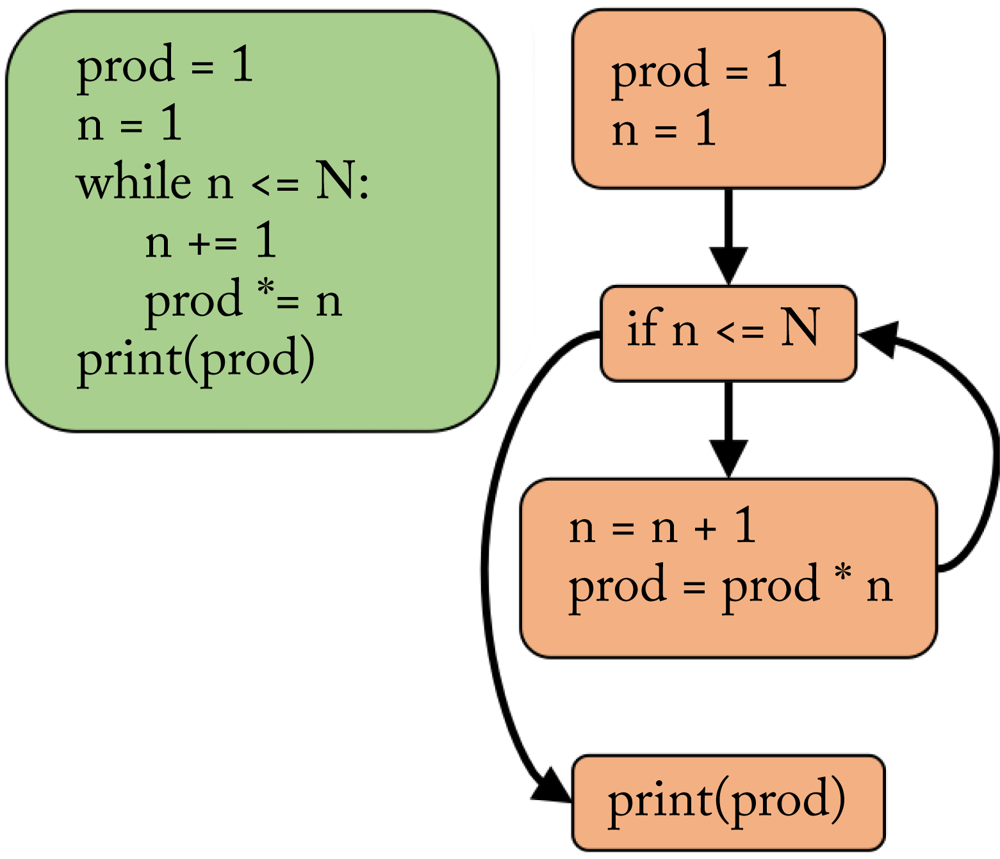
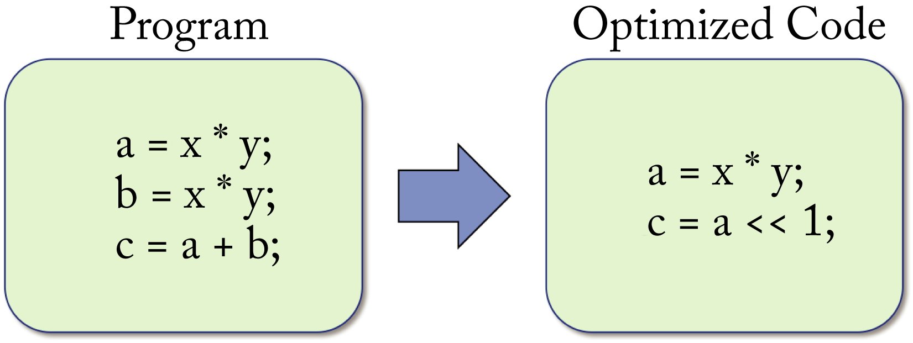
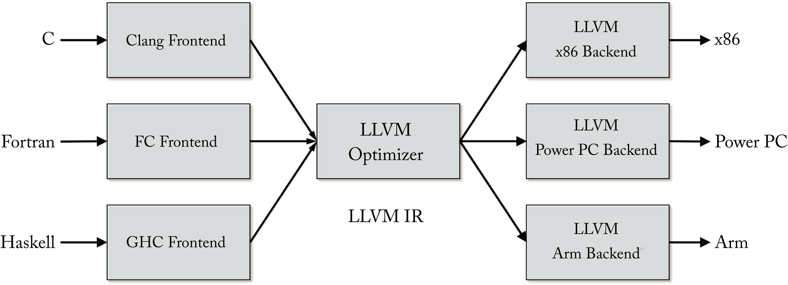
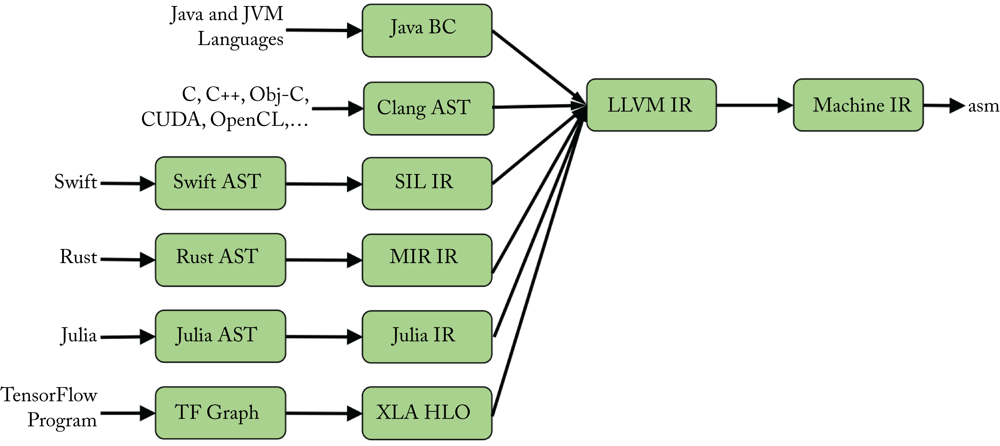
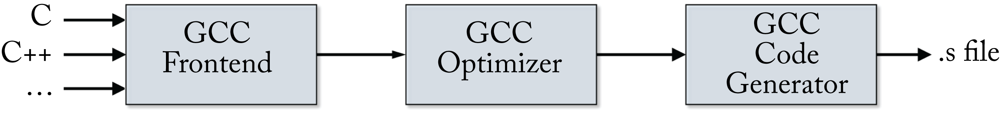
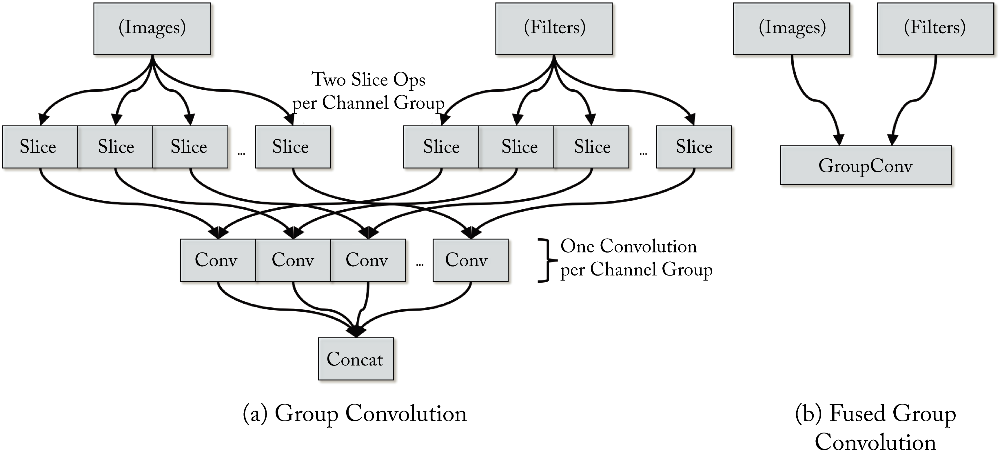

Chapter 8: Compiler Optimizations
At the core of the software stack are compilers to transform the programmer's high-level code into executable code that runs efficiently on a target device. Programmers use a variety of languages to code at various levels of abstraction. A programming language is a formal language used to write code, such as for functions and algorithms. High-level languages are independent of a hardware target and include C, C++, Python, Java, Javascript, CUDA C/C++, Swift, and Julia. Assembly (asm) is a low-level language that targets a specific instruction set architecture (ISA). In between are intermediate languages that are assembly-like in format but general enough for execution on different ISA, such as LLVM IR, various Multi-Level IR (MLIR) dialects, and PTX for Nvidia GPUs.
Programming languages have a set of specifications or rules that dictate what the outputs should be for a given input. The output also depends on the dynamic conditions of the running program. The approaches to implement a programming language are interpretation, compilation, or a mixture of both. The terms interpreted language and compiled language denote that the default or canonical implementation of that language uses an interpreter or a compiler, respectively. For some languages, the canonical implementation is the only implementation, while others like Python have multiple implementations (more on this below).
An interpreter is a computer program that directly executes the code for a particular language. That is, the code does not map to machine code. The processor executes (runs) the interpreter, and the interpreter reads and generates the output for the interpreted language according to the interpreted language's specifications and rules. The interpreter's source code (the program that is executed) can be a different language than the interpreted language.
A compiler is a computer program that transforms code between two languages or within a language. The compiler runs various optimization passes to improve the execution time and simplify the code. Alternatively, the compiler may only focus on code canonicalization, which transforms the code into more rigid patterns removing unnecessary variations. The compiled code is passed to an interpreter or directly to the processor when it is machine code (in this case, the processor can be thought of as the interpreter of the machine code).
Often, before an interpreter executes a high-level code, the code is first dynamically (just-in-time) compiled into bytecode, which is a compact language or efficient intermediate representation. This compilation is usually a minor transformation to make it easier for the interpreter to parse the code. Typically, more compilation (optimization passes) leads to faster execution; however, this comes at the expense of longer build time.
Let us look at the Python language as an example of a language with various implementations, and focus on two: CPython and PyPy. CPython is an interpreter implementation and the canonical (default) Python implementation. Python programmers that have never heard of CPython likely use the CPython interpreter. Like other interpreted languages, the Python source code or Python command, when used interactively by the programmer, is transformed into bytecode. Then, this bytecode is interpreted by CPython one command at a time. PyPy is an interpreter and a JIT compiler (more on JIT below) Python implementation.
Compilers lower (this is compiler parlance for transform) code from a higher-level language to a lower-level language, for instance, from C++ to x86 machine code. Compilation to machine code that happens before runtime (execution) is known as Ahead-of-Time (AOT) compilation. Compilation to machine code that happens during runtime is known as Just-in-Time (JIT) compilation. AOT improves the performance for static graphs at the expense of longer compile times.
A JIT compiler is a computer program that compiles to machine code at runtime. Using a JIT compiler can significantly increase startup time. To mitigate, JIT compilers are typically used alongside an interpreter for runtime profile-guided optimizations, also known as adaptive optimizations. As the interpreter executes the source code (or, more precisely, the bytecode), the interpreter tracks repetitively used sections and triggers the JIT compilation for these sections into higher-performing machine code. The compiled code is cached, and the interpreter can then alternate between the usual execution of bytecode and the execution of the JIT code.
An intermediate representation (IR) is a data structure or graph representing the required operations for a particular program. Compilation may use several levels of IR, progressively lowering on each pass. A high-level, hardware-independent IR may contain control-flow tokens, such as for, if, and while. A low-level, hardware-independent IR may look similar to assembly language while still being generic enough not to be tied to a specific hardware implementation to simplify the next stage of compilation. Bytecode is an example of an IR.
Two common properties of some IRs are static single-assignment (SSA) form and three-address code (TAC). SSA requires that each variable (called a typed register) is assigned precisely once (it is not mutable), and every variable is defined before it is used, which facilitates various optimizations. TAC requires that statements have at most three operands.
Compilers often take multiple optimization passes over each IR, and each pass may affect subsequent passes. The following are hardware-independent and hardware-dependent optimization passes common in the compilation of DL models (italicized passes are the most critical for performance in DL):
-
Hardware-independent optimizations: operator fusion, loop permutations, arithmetic simplification, constant folding and propagation, dead code elimination, common subexpression elimination, inlining, loop-invariant code motion, and memory to register promotion.
-
Hardware-dependent optimizations: loop tiling, polyhedral transformations, data layout manipulations, operator folding, micro-kernel and intrinsic matching, memory allocation, memory fetch sharing, device placement, operator scheduling, loop splitting, and loop fission.
Operator fusion and loop tiling are the most important optimizations for DL models, followed by the other italicized optimizations. Some operator fusions may be hardware-dependent; those that are ISA-dependent are encompassed under operator folding. All these optimization passes are discussed in Sections 8.4 and 8.5.
In the remainder of this chapter, we review programming language types. We explain the compilation process from high-level language to machine code and, as an example, explain how this process works with the popular LLVM compiler. Moreover, we describe standard compiler optimization passes to accelerate the execution of DL models. Specific DL compilers are discussed in Chapter 9.
8.1 Language Types
Languages can be characterized as statically-typed languages or dynamically-typed languages. In a statically-typed language, the variables are associated with a data type that does not change. Statically-typed languages are generally compiled languages; the type checking happens at compile time before the program runs. Statically-typed languages include C/C++, CUDA C/C++, Java, Scala, Fortran, and Pascal.
In a dynamically-typed language, the values are associated with a type, and the variables can change type. That is, the variables are dynamic and can be thought of as generic pointers to typed values. Dynamically-typed languages are generally interpreted languages; the type checking happens at runtime. Dynamically-typed languages include Python, JavaScript, and PHP.
Languages are strongly-typed or weakly-typed. While there is no universally accepted distinction between them, in general, a strongly-typed language requires that every value has a type, and a variable must be explicitly cast before it is assigned to another variable of a different type.
8.2 Front-End, Middle-End, and Back-End Compilation Phases
Compilers, such as GCC, LLVM, ICC, MSVC, and some of the DL compilers discussed in the next chapter, lower code to a target ISA. The compilation process from a high-level language to machine code typically consists of three overarching phases, illustrated in Figure 8.1:
-
front-end compiler: parser (language dependent);
-
middle-end compiler: optimizer (language and hardware independent); and
-
back-end compiler: machine code generator (hardware dependent).
Each phase has one or more IRs depending on the optimization passes. One or multiple compilation infrastructures may be used for these phases.
Figure 8.1: The compilation process consists of a front-end, middle-end, and back-end phase.
Front-end
The front-end compiler parses the code, converts it into tokens, checks for errors (syntactic and semantic analysis), and generates a domain-specific IR. Two common types of IR used by front-end compilers are the abstract syntax tree (AST) and the control-flow graph (CFG) data structures. The AST is language-dependent. It captures the lexical structure (layout) of the source code, using the internal nodes for the statements and operators, and the leaf nodes for the operands representing values or variables. The parser returns an error message if a rule in the language specification is violated. Front-end compiler algorithms are fairly matured. Figure 8.2 illustrates an AST generated from a for loop.
 Figure 8.2: (green) The programmer's source code. (orange) The abstract syntax tree (AST) representation. The parser constructs an AST that captures the lexical structure of the source code.
A CFG is language-independent and expresses the control-flow and data paths through a program. A control-flow statement, such as for, while, and if, determines which of two or more paths to take. The nodes are basic blocks, and the edges represent possible execution paths between basic blocks. Basic blocks are a set of sequential operations with no branch statements until the end of the block. Figure 8.3 illustrates a CFG used to compute the factorial of \(N\). The top block is for the code that runs before the while loop. The next block is the comparison to decide which branch to take. The next block is the body and returns to the comparison. The last block is the code that runs after the while loop. A CFG is typically compiled from an AST IR.
 Figure 8.3: (green) The programmer's source code. (orange) The control-flow graph (CFG) representation. The CFG expresses the possible decisions at each graph node.
Middle-end
The middle-end compiler has two main tasks: (1) canonicalize the various ways of representing the code into predictable patterns removing unnecessary variations and (2) improve the performance via a series of optimizations. Some middle-end optimizations are completely hardware-agnostic, and others need information about the back-end hardware, such as multithreaded parallelization and SIMD vectorization. Figure 8.4 illustrates an example optimizing the equation \(c=a+b\) as \(c=a\)<<\(1\), where the operator << left-shifts \(a\) by \(1\) bit, which is equivalent to multiplication by \(2\).

Figure 8.4: The optimizer reduces the number of operators that need to be executed: (left) the unoptimized code and (right) the equivalent optimized code assuming a is an unsigned integer.
The optimizer typically performs a series of distinct optimization passes on the IR. LLVM does around 150 passes. GCC and LLVM use different algorithms to traverse the IR iteratively. While the order of optimizations affects the end result, strict rules to determine the optimal order do not exist.
In general, there are three common compiler optimization parts: legality analysis, profitability analysis, and transformation. Legality analysis makes sure the transformation does not break the program. Profitability analysis uses a cost model to determine if the optimization is beneficial and searches for parameters to perform the optimization. Finally, the transformation performs the actual modification of the code.
Back-end
The back-end compiler lowers the IR onto the target ISA and performs hardware-dependent optimizations. These include instruction selection, instruction scheduling, and memory and register allocation.
The output from the back-end compiler is machine code in an assembly file or object file. The linker takes the object file(s) and dependent libraries to generate an executable file.
Intrinsic functions
There are some constructs, such as vectorization with SIMD instructions, that a high-level language may not address. In these cases, intrinsic functions provide a way for the programmer to use such constructs. An intrinsic function is a function used in a given language. The implementation is handled especially by the compiler, which maps and optimizes the intrinsic function for a back-end target. Typically, the compiler substitutes a sequence of instructions for the intrinsic function call. Some intrinsic functions are portable, and others are target specific.
An intrinsic function provides a compromise between transparent integration inside a C/C++ function and writing full inline assembly (where most instructions map directly to an ISA instruction and the compiler takes care of register allocation). GCC, for instance, implements intrinsics for C/C++ that map directly to the x86 SIMD instructions.
8.3 LLVM
LLVM originally stood for low-level virtual machine (albeit with no relationship to what most current developers today think of as virtual machines) since the low-level LLVM IR code targets a universal theoretical machine (hence the original term virtual) and compiles for a variety of architectures [LA04]. While the concept is still accurate, LLVM is now the full name and no longer an acronym. LLVM is a brand for an umbrella project applied to the following:
-
LLVM IR
-
LLVM Core
-
LLVM debugger
-
LLVM implementation of the C++ standard library
-
LLVM foundation
In this section, LLVM refers to the LLVM Core, a middle-end and back-end compiler program written in C++.
LLVM is designed as a set of reusable libraries with well-defined interfaces. A front-end compiler can be written for any language that can compile to the LLVM IR, and a back-end compiler can be written for any new target that can compile from the LLVM IR, as illustrated in Figure 8.5.
 Figure 8.5: LLVM is designed as a set of modular compiler components supporting various front-end languages and back-end hardware targets.
8.3.1 Front-End Compilers
Clang is an "LLVM native" front-end compiler for the C/C++, Objective-C/C++, and CUDA C/C++ languages. Clang and LLVM are used in production to compile all the apps in Apple's iPhone and iOS, Google's production server applications, Nintendo GameCube games, and Sony's Playstation 4 games.
In addition to Clang, other front-end compilers to support multiple languages, such as Python, TensorFlow, Halide, Julia, Swift, and Fortran, can compile to LLVM. Thus, all those languages can exploit the same LLVM compilation infrastructure for compiler optimization passes and back-end machine code generation. The LLVM back-end compiler supports the x86, x86-64, PowerPC (PPC), Nvidia Parallel Thread Execution (PTX), AMD Graphics Core Next (GCN), Arm, and other architectures.
LLVM does not support domain-specific expressions and types. Therefore, domain-specific SSA-based IRs, such as those shown in Figure 8.6, should be used for optimizations that are too high-level for LLVM. A higher-level IR provides better location tracking to improve debuggability, traceability, and user experience. However, this comes at the expense of heavier infrastructure and some duplication in the domain-specific IR and LLVM IR optimizations.
 Figure 8.6: Many languages use a higher-level domain-specific IR for domain-specific optimizations before lowering to the LLVM IR. Based on [LP19].
Swift, Rust, Julia, and the TensorFlow library all use a higher-level IR. Swift uses the Swift High-Level IR (SIL), and TensorFlow uses XLA HLO before lowering to the LLVM IR. These higher-level IRs are similar to the LLVM IR but have domain-specific expressions and types; in particular, TensorFlow supports DL operators on tensors.
8.3.2 Intermediate Representation
The LLVM IR code is a self-contained (complete code representation), strictly SSA, strongly-typed, and mostly TAC language with well-defined semantics. It has three isomorphic forms: (1) an on-disk binary "bitcode" format (*.bc); (2) an assembly-like human readable/writable textual format (*.ll); and (3) an in-memory CFG data structure to which other front-ends can lower. LLVM provides tools to convert between these forms.
The LLVM IR has a simple architecture-independent instruction set made up of the following components: (1) operator instructions, (2) operands, (3) control-flow, and (4) phi nodes to manage the data flow. Additional concepts not discussed are intrinsics, metadata, and attributes. The following is a simple LLVM IR code sample that uses the first three of the four components mentioned above.
declare i32 @f(i32 %z)
define i32 @p(i32 %a, i32 %b) {
entry:
%0 = mul i32 %a,%b
%1 = call i32 @f(i32 %0)
%2 = mul i32 %0, %1
ret i32 %2
}
In line \(1\), the function @f with value %z is declared. In line \(3\), the function @p with integer arguments %a and %b is defined. %0 equals the product of %a and %b; %1 equals the returned value of function @f with argument %0; %2 equals the product of %0 and %1; and %2 is returned value.
A phi node is an instruction used to merge multiple control-flow paths and multiple definitions of a variable selecting which definition to use. In the CFG, the phi instruction, when used, is always at the start of a basic block. The phi node has multiple pairs of operands; each pair consists of a value and a reference to a basic block. The basic blocks are the immediate predecessors to the basic block in which the phi instruction is located.
8.3.3 Back-End Compilers
The optimized LLVM IR is passed to the LLVM back-end compiler for ISA code generation. The LLVM code generator provides many optimization passes by default. A programmer writing a new back-end compiler from the LLVM IR to a target architecture can use, overwrite, or add to the default passes. This flexibility allows the back-end compiler programmer to choose what makes sense for an architecture and reuse existing capabilities.
8.3.4 GCC Comparison
The most popular compilers are LLVM and the GNU compiler collection (GCC). GCC is a compiler program primarily written in C to compile various high-level languages to machine code. The GCC acronym has two different meanings: the GNU C Compiler, a C compiler, and the GNU Compiler Collection, a collection of compilers for the C/C++, Objective-C, Java, and Fortran programming languages. GCC began as a C compiler and evolved to support other languages. Today, GCC is the default compiler in Linux, and Clang/LLVM is the default compiler in macOS. A high-level comparison between GCC and LLVM follows:
 Figure 8.7: GCC can be used for the front-end, middle-end, and back-end compilation.
-
Performance: Relatively similar today (historically, GCC was faster).
-
Modularity: LLVM is more modular.
-
IR: LLVM IR is a complete code representation (although it is not intended to be used to write programs). GCC's IR (called GIMPLE) is not.
-
Adoption: GCC has larger adoption; both have a large community of developers.
-
License: GCC's GPL license requires developers who distribute extensions or modified versions of GCC to make their source code available unlike LLVM's Apache 2.0 license.
8.4 Hardware-Independent Optimizations
The overarching goal of hardware-independent optimizations is to reduce memory accesses and reduce the number of operations. To that end, the following set of optimization passes are common. In DL, some of these optimizations are referred to as graph compilations, and the most important is operator fusion.
Operator fusion merges operators (also known as graph nodes) to reduce memory accesses by not having to save the intermediate results in memory. It is applicable when the operators have compatible loop patterns with continuous (called coalesced in GPU parlance) memory access. To illustrate, a fused sigmoid operator (see Figure !!!FIX!!![fig:activations]) computes the exponentiation, addition, and division components keeping the intermediate results in local caches or registers and only saving the final result to memory.
Fused operators require that either the primitive libraries, such as oneDNN, MIOpen, and cuDNN, or that a back-end compiler provides or generates an optimized fused primitive to get the performance benefit. Thus, it is not entirely device-independent. Note that operator folding is a hardware-dependent operator fusion pass discussed in Section 8.5.
The types of operator fusions are:
-
element-wise operator with another element-wise operator, for instance, the multiple element-wise operators in a sigmoid function;
-
element-wise operator with a reduction operator, for instance, in the softmax function; and
-
matrix-wise operator with an element-wise operator.
An example of the last bullet is a convolution or a GEMM operator fused with an activation function that operates on each element of the tensor, such as convolution followed by ReLU. The activation function is applied immediately after the output tensor value from the convolution is computed, and while this value is still in a register or scratchpad. Some of the fusion operators supported by TensorFlow's built-in compiler, Grappler (introduced in Section 9.2.6), are:
-
Conv2D + BiasAdd + \(<\) Activation function \(>\)
-
Conv2D + FusedBatchNorm + \(<\) Activation function \(>\)
-
MatMul + BiasAdd + \(<\) Activation function \(>\)
-
FusedBatchNorm + \(<\) Activation function \(>\)
As an example of the fusion benefits, Intel reported around \(80\times\) performance gain for batch size \(1\) fusing group convolutions in the MobileNet v1 model [SPE19]. In group convolution (introduced in Section 3.2.1), the different feature channels across a data batch are divided up into groups processed independently. The fused group convolution is jointly processed as a single DL operator, as shown in Figure 8.8.
 Figure 8.8: (a) A group of convolutions used in MobileNet v1. (b) A fused operator can be jointly optimized for the entire group. Based on [SPE19].
Loop permutations modify loop indices to improve memory access. Some permutations, such as loop tiling, are target-dependent and are discussed in the next section. An example of permutation is interchanging for loops, as shown in the following code. The indices are interchanged to have coalesced memory accesses, which are faster than strided memory access.
// before loop permutations
for (i=0; i<N; i++)
for (j=0; j<M; j++)
x[j][i] = y[j][i]; // strided memory access
// after loop permutations
for (j=0; j<M; j++)
for (i=0; i<N; i++)
x[j][i] = y[j][i]; // coalesced memory access
Arithmetic simplifications reduces the number of expressions and simplifies the code. Examples include these replacements:
-
\(a\times x + b\times x + c\times x {\Rightarrow} (a + b + c)\times x\)
-
\(!(x < y) {\Rightarrow} x\geq y\)
-
\(2\times x {\Rightarrow} x<<1\) (for unsigned integers)
-
\(x-x {\Rightarrow} 0\)
-
\(x-0 {\Rightarrow} x\)
-
\((x\times 2)-x {\Rightarrow} x\).
-
\(A^{T}B^{T} {\Rightarrow} (BA)^{T}\)
-
\((A^{T}B^{T})^{T} {\Rightarrow} BA\)
The last two items are known as transpose eliminations, which are a subset of arithmetic simplifications. Some of the simplifications can lead to numeric differences compared to the original expression. Still, these differences are generally small and can be safely ignored in DL.
During inference, the batch normalization expression can be incorporated into the convolution expression by scaling the weight values, as detailed in Section 2.6. While this is sometimes referred to as a fused operator, this optimization is an arithmetic simplification.
Constant propagation and constant folding substitute (propagate) known constants values in the expressions, and precompute (fold) constant expressions. Examples include these replacements:
-
\(3\times 4 {\Rightarrow} 12\)
-
\(x=2;\ y=3\times x {\Rightarrow} y=6\).
Dead code elimination (DCE) eliminates unused code. In the following code samples, the if expression is eliminated. Note that a has to be an integer (not a float).
// before constant propagation and DCE
int a=0;
if (a)
mycode();
// after constant propagation
int a=0;
if (0)
mycode();
// after DCE
int a=0;
Common subexpression elimination (CSE) eliminates repeated common subexpressions computing them only once. In the following example, the expression \(a + b\) is only computed once, after the CSE pass.
// before CSE
c = a + b
d = a + b
e = c + d
// after CSE
c = a + b
d = c
e = c + d
Inlining, also known as inlining expansion, (not to be confused with the unrelated C++ inline keyword) moves the code of the called function into the calling function. It saves the overhead of procedure calls and allows further optimizations at the calling function at the expense of a larger executable file and, therefore, longer load time and increased pressure on the instruction cache. A toy example follows:
// before inlining
myFunction(int x){
printf("%d\n", x);
printf("%d\n", x*x);
}
myFunction(a);
myFunction(b);
// after inlining
printf("%d\n", a);
printf("%d\n", a*a);
printf("%d\n", b);
printf("%d\n", b*b);
Note that inlining wrapper functions do not affect the size of the executable.
Loop-invariant code motion (LICM), also called hoisting or scalar promotion, moves out expressions that are not required to be in the loop.
Memory to register promotion tries to promote memory references to be register references in order to reduce the number of memory loads and stores. The front-end and middle-end compilers assume an unlimited number of registers. Register assignment happens in the back-end compiler and is hardware-dependent.
8.5 Hardware-Dependent Optimizations
The overarching goal of hardware-dependent optimizations is to have coalesced memory access and maximize data reuse (or equivalently, maximize arithmetic intensity). To that end, the following set of optimization passes are common. In DL, some of these optimizations are referred to as tensor compilations.
Loop tiling modifies the loop to improve the locality of memory access in space and time. It is one of the most impactful optimizations and one of the most challenging given the number of tile sizes (also known as stencils) and blocking strategies across the memory hierarchy. Cache blocking and register blocking use loop tiling and data layout optimization passes to maximize data reuse and minimize memory and register conflicts. These conflicts are known as bank conflicts and result when loading and storing data to and from the same location.
The goal of loop tiling optimization is to reuse data in local memory and reduce main memory accesses. This optimization tiles the loop so that the data in the inner loops fit into the local memory to increase reuse before it gets evicted. Loop strip-mining, also known as sectioning, is 1-dimensional tiling used for vectorization.
The code below (based on [VAK19]) demonstrates loop-tiling in two steps. In Step \(1\), the inner loop is split into two loops: an outer loop, known as the tiled (or blocked) loop, and an inner loop known as the element loop that fits into local memory. In Step \(2\), the outer two loops are permuted (swapped). This more efficient implementation reuses elements in the inner loop \(N\) times before they get evicted from the local memory. In the code, M is assumed to be a multiple of TILE. Note that the loop indexed by i could also be tiled (not shown in the code).
// Original code
for (i = 0; i < N; i++)
for (j = 0; j < M; j++)
operation(x[i], y[j]);
// Step 1: Tiling
for (i = 0; i < N; i++)
for (jj = 0; jj < M; jj += TILE)
for (j = jj; j < jj + TILE; j++)
operation(x[i], y[j]);
// Step 2: Permuting
for (jj = 0; jj < M; jj += TILE)
for (i = 0; i < N; i++)
for (j = jj; j < jj + TILE; j++)
operation(x[i], y[j]);
The optimal stencil (tile size) is unique to each microarchitecture and is a parameter the compiler has to select, adding complexity to the solution space. One algorithm to facilitate the selection is the Cache-Oblivious Recursion algorithm [FLP+99].
Polyhedral is a compiler technique that results in a set of loop transformations used for efficient code generation. Note that some of the polyhedral transformations are hardware-independent. A polyhedral representation specifies the boundary of a polyhedron (the index space of a tensor expression). The polyhedral-based compilations provide a set of (usually affine) loop transformations, such as loop tiling, to facilitate efficient code generation on a hardware target.
Polyhedral compilation techniques are conventional in HPC and image processing. The challenge is the NP-complete algorithms, such as integer linear programming (ILP) solvers or other exponential algorithms required, which limit scalability.
An affine representation is a simplified polyhedral representation with for loops and if control structure ops. An affine transformation applies a unique affine function to each element of a tensor and preserves the dimensions of the tensor. An affine compilation does not require the use of ILP or any other NP-complete algorithms. The DL compilers PlaidML, TVM, and MLIR dialects, such as LinAlg and Affine, use polyhedral-based (typically, affine-based) loop transformations. Chapter 9 covers these compilers.
Data layout, also known as memory format, memory layout, or tensor layout transformations, modifies the data layout so it is efficiently accessed. As reviewed in Section 2.3, standard data layouts used by the main frameworks are \(NCHW\) or \(NHWC\), and \(RSCK\) or \(KCRS\) for the weight tensors. These data layouts are referred to as plain formats or native formats (native or default to the DL framework).
Data in memory is arranged as a 1D vector. The \(NCHW\) format means the width values are the innermost dimension and are adjacent in memory. The memory index offset for a given index \(n,c,h,w \in N,C,H,W\) is
TensorFlow and PyTorch natively support both \(NCHW\) and \(NHWC\) with \(NCHW\) as the default layout. ONNX only supports \(NCHW\). FBGEMM and the Quantized Neural Networks PACKage (QNNPACK) support \(NHWC\) but not \(NCHW\). LIBrary for eXtra Small Matrix Multiplies (LIBXSMM) supports both but is optimized for \(NHWC\).
The data layout can be modified to achieve better reuse from cache (also known as local memory in AMD GPUs or shared memory in Nvidia GPUs), scratchpad, and registers to use SIMD, SIMT, or dataflow instructions more effectively. To illustrate, one of the layouts used by oneDNN for CPUs for architectures with \(512\)-bit registers and \(fp32\) values is the 5D tensor
This format blocks (tiles) the channel dimension in blocks of \(16\) to fit into a 512-bit (\(16\) \(fp32\) values) register. The memory index offset, using the \(N\hat{C}\mathit{HW}16\hat{c}\) layout, is:
where \(\lfloor{\cdot}\rfloor\) is the floor operator. Using this layout format, the data is fed as \(16\) consecutive \(fp32\) values into a register from the same \(n,h,w\) indices but different channels and processed in parallel using SIMD instructions. A channel size multiple of \(16\) is beneficial for this blocked format.
The cuDNN primitive library typically uses the \(NCHW\) layout. However, newer GPUs, such as the V100, prefer the \(NHWC\) layout for \(fp16\) computations with \(C\) being a multiple of \(8\) to use the available tensor cores efficiently. Padding the channels with zeros to the desired size can improve the computational efficiency. Note that TensorRT supports blocked formats to achieve the highest performance on some workloads.
Depending on the operands, different layout strategies result in better performance. For instance, the convolution function potentially uses three different tensor layout strategies depending on the operand sizes:
-
one layout for operands with a small number of channels;
-
one layout for operands with a large number of input activations; and
-
one layout for operands with a large number of weights.
The \(\mathit{im2col}\) GEMM-based convolution, discussed in Section 2.3, can be used when none of the layout strategies are well optimized for the particular operand size. Similarly, the operands in a GEMM expression also use different layouts.
Layout optimizations involve inserting layout conversion nodes in the computation graph. The overall performance gains from the more efficient data layout should consider the data layout conversion time to determine if it has a net performance gain. A related graph-level optimization pass involves reducing the number of layout conversions by keeping the tensors in a blocked layout for as many nodes as possible before converting back to the default graph data layout.
Operator folding (ISA matching) combines two operators into one supported by a hardware instruction. For instance, the hardware may support a fused multiply-and-add (FMA) operator, in which case a fused operator, such as \(a * b + c\), can speed up the program execution.
Micro-kernel and intrinsic matching matches and replaces a block of computations with the corresponding micro-kernel or corresponding hardware intrinsic.
Memory allocation, also known as static memory planning, preallocates runtime memory to hold the tensors and determines memory reuse and in-place computations.
Memory transfers, also known as explicit memory latency handling, is used in conjunction with the memory allocation pass. It adds memory access instructions to transfer data to and from memory banks to overlap memory transfers with computations. This optimization is even more critical for accelerators with limited control logic, as they have a limited ability to reduce memory access latencies or hide them within the computation. CPUs and GPUs have built-in mechanisms that hide the memory transfer latency, such as speculative prefetching. Some CPUs also have simultaneous multithreading (SMT), which keeps several threads persistent on a unit and interleave their executions to cover latencies.
Accelerators usually do not have caches but rather scratchpads, which need to be managed explicitly by software. Outsourcing memory control from the hardware to the software is a common ASIC design choice to reduce the size of the die and save power. For instance, the control logic of the TPU is small and only takes \(2\%\) of the die (the control logic in a GPU or a CPU is significantly larger) [SYP17].
Memory fetch sharing, also known as nested parallelism with cooperation, improves fetching data, from memory. Threads with local shared memory space cooperatively fetch data from higher levels in the memory hierarchy. GPU and accelerators with local shared memory benefit from this optimization.
Device placement evaluates the various back-end hardware targets and determines a strategy to allocate the execution of subgraphs to each available device.
Operator scheduling specifies which operators to schedule and their execution order, to reduce runtime memory usage and output latency.
Loop unrolling replaces the statements in the loop body with multiple statements to (1) reduce the number of loop control instructions, (2) improve parallelism if the statements are independent, and (3) reduce the branch penalty. Each iteration of the resulting loop executes multiple iterations of the original loop. This optimization typically increases the size of the binary. A toy example follows:
// Before loop unrolling
for (i = 0; i<100; i++)
x[i] = i;
// After loop unrolling
for (i=0; i<100; i+=4){
x[i] = i;
x[i+1] = i + 1;
x[i+2] = i + 2;
x[i+3] = i + 3; }
When the number of loop iterations is not known until runtime, an AOT compiler can generate several versions of the loop with different unrolling factors, or alternatively, a JIT compiler can be used.
Loop splitting splits the loop iterations into multiple loops if the iterations are not dependent on each other and can execute in parallel. A toy example follows:
// Before loop splitting
for (i = 0; i<100; i++)
printf( "Iteration %d\n" , i);
// After loop splitting
for (i = 0; i<25; i++)
printf("Iteration %d\n", i);
for (i = 25; i<50; i++)
printf("Iteration %d\n", i);
for (i = 50; i<75; i++)
printf("Iteration %d\n", i);
for (i = 75; i<100; i++)
printf("Iteration %d\n", i);
Loop fission, also known as loop distribution, splits the body of a loop if the components are not dependent on each other and can execute in parallel. Note that the reverse is called loop fusion which unites multiple loops into a single loop. To illustrate:
// Before loop fission
for (i = 0; i<100; i++){
a[i] = 3 * i;
b[i] = 4 * i; }
// After loop fission
for (i = 0; i<100; i++)
a[i] = 3 * i;
for (i = 0; i<100; i++)
b[i] = 4 * i;
In this chapter, we review the basics of programming languages and compilers that map high-level languages to machine code. We highlighted standard compiler optimization passes to accelerate the execution of DL models, particularly fusing element-wise operations into dense linear operations. Compilers are imperative for the success of dedicated DL processors; manually optimizing a model to perform well on a back-end target is extremely costly and not scalable across several targets. In the next chapter, we discussed prominent DL compilers used by hardware vendors and hyperscalers.